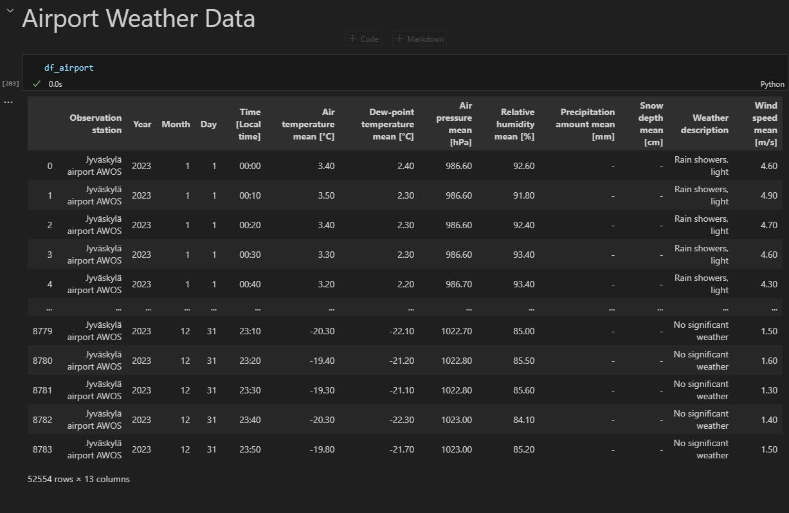

Weather Data Update: 2023 Insights from Jyväskylä Airport
We have integrated the latest weather data for the year 2023, sourced directly from Jyväskylä Airport. The data was retrieved from the Finnish Meteorological Institute's (FMI) open data platform. This addition enhances our analysis capabilities and ensures more accurate and up-to-date weather-related insights.

Data Processing and Feature Engineering for Weather Analysis
Added a Time_Stamp column by combining date and time data.
Created snow, ice, drizzle, and rain columns based on the weather description column.
The Tie 4 dataset contained several similar columns, with some missing data.
Used similar columns within the Tie 4 dataset to impute missing values effectively.
Data Integration and Missing Value Handling
Merged the Tie 4 dataset with airport weather data using the Time_Stamp column,
retaining Tie 4's original columns to analyze distributions and correlations.
Identified missing values in the merged dataset and used the interpolation method to impute them by averaging adjacent data points in the same column.
Correlation Analysis and Data Distribution Insights
Checked correlations between features from both datasets. Air temperature and temperature, as well as air pressure and road temperature, showed moderate positive correlations with friction. Snow displayed a strong negative correlation, while relative humidity showed a moderate negative correlation with friction. However, the lack of correlation between ice and friction was unexpected due to insufficient ice observations in the dataset.
Compared the distributions of temperature and air_temp columns and assessed the reliability of the imputation process for missing values.
Evaluated the distribution of dewpoint from Tie 4 and airport weather columns to confirm if they aligned and supported reliance on the imputation method.
Analyzed how dewpoint, relative humidity, and friction are distributed with snow. Observed that friction decreases significantly with moderate snow at temperatures between -10°C and 0°C, and further drops under high humidity conditions.
Overview of Marwis Mobile Sensor Data
We have three Marwis mobile sensor datasets: the first dataset contains approximately 1 million data points, while the second and third datasets each have more than half a million data points, totaling over 2 million data points.
Initially, the data was in JSON format, and after converting it into .csv files, each dataset had 21 columns.
Through data reduction, we successfully narrowed down the columns to the 12 most important ones.
.JPG)
.png)
.JPG)
.JPG)
.JPG)
.JPG)
.png)
.png)
.png)
.png)
.png)
.png)
.png)